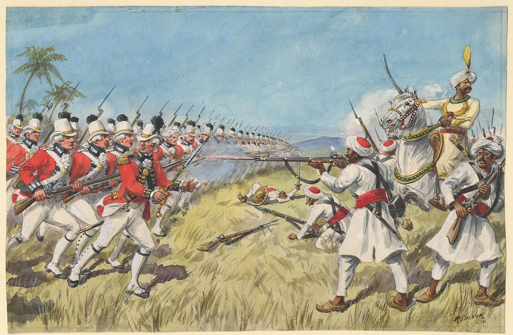

The First Anglo-Mysore War (1767-69)
The Anglo-Mysore Wars were fought between Rulers of Mysore and Britishers in India to ensure dominance in the region. The war was instigated in part by the machinations of Asaf Jah II, the Nizam of Hyderabad, who sought to divert the company's resources from attempts to gain control over the Northern Circars. Some of its results are:-
- The conquered territories were restored to each other
- The British also agreed that they would help each other in case of a foreign attack
- English was forced to conclude a very humiliating treaty with Haidar, the 'Treaty of Madras', which brought an end to the war.
These are the battles that took place in the First Anglo-Mysore War.
- Battle of Chengam (or Chengama, 3 September 1767)
- Battle of Tiruvannamalai (25 September 1767)
- Siege of Ambur (November–December 1767)
- Battle of Ooscota (night of 22/23 August 1768)
- Battle of Mulwagul (4 October 1768)
- Battle of Baugloor (22–23 November 1768)
The Story
Becoming King
The Indian subcontinent experienced severe unrest during the eighteenth century. Although the Mughal Empire ruled over a large portion of the subcontinent at the beginning of the 18th century, the empire's disintegration following Emperor Aurangzeb's death in 1707 led to a territorial conflict between viceroys and other local rulers.
The Sultan and de facto ruler of the Kingdom of Mysore in southern India was Hyder Ali Khan (1720–1782). As a reward for his performance, Hyder Ali was given the title of Fath Hyder Bahadur or Nawab Hyder Ali Khan Bahadur as a reward by the young King of Mysore, Krishnaraja Wadiyar II (1728–25 April). Hyder Ali can be considered to have briefly held the title of "Nawab of Mysore" by 1759 because he is known to have been the first ruler of Mysore to receive the title of Nawab.
After overthrowing the prime minister and imprisoning Krishnaraja Wodeyar II, the king of Mysore, in 1761, Hyder Ali took over. He was a leader with great ambition. He had made up his mind to rise to the position of supreme power in the south. At the expense of his neighbors, he desired to increase his power. The Nizam of Hyderabad, the British, and the Marathas were all envious of Hyder Ali's rising power. The British engaged Mysore in four wars over the following 32 years (1767–1805) because the company desired control over Mahe, the only port through which Mysore could export goods to Europe. The Anglo-Mysore Wars are these four conflicts.
The Sultanate of Mysore and the British East India Company, the Maratha Empire, the Kingdom of Travancore, and the Kingdom of Hyderabad engaged in battle during the final three decades of the 18th century. The British attacked from the west, south, and east, while the Nizam's armies attacked from the north during the battles conducted by Hyder Ali and his subsequent son Tipu.
The War
Hyder Ali developed a powerful army and conquered numerous southern provinces, including Bidnur, Canara, Sera, Malabar, and Sunda. Additionally, the French helped him train his troops. The Brits were worried by this.
The Marathas attacked northern Mysore in January 1767, presumably expecting manoeuvres by the Nizam, which set off the First Anglo-Mysore War (1767–1769). Before Haider began talks to terminate the invasion, they had advanced as far south as the Tunghabadhra River. The Marathas promised to evacuate north of the Krishna River in exchange for payments of 30 lakh rupees; by March, when the Nizam started his assault, they had already fled. With the assistance of two battalions of company soldiers under Colonel Joseph Smith, the Nizam marched as far as Bangalore.
During the First Anglo-Mysore War, notably during the Battle of Chengam, Mir Nizam Ali Khan Siddiqi (sometimes known as Asaf Jah II; 1734–1803) resisted the East India Company. He later turned against Mysore when he signed a new pact with the British in February 1768.
After learning that the Haider and the Nizam were discussing an alliance, Smith evacuated most of his men to the Carnatic boundary in May. The agreement reached between the two powers required them to work together to oppose the British. The nizam was to recognize Haider's son Tipu Sultan (born Sultan Fateh Ali Sahab Tipu, 1751–1799) as Nawab of the Carnatic when that region was taken in exchange for Haider paying 18 lakh rupees to halt the invasion. Despite the agreement, there was little mutual confidence between the two parties; Haider was reputed to have sent spies into the Nizam's army.
The British army had set up camp close to Kaveripattinam on August 25th, 1767. Hyder Ali and the Nizam ambushed them with their combined troops. Kaveripattinam has been taken over by Indian soldiers by August 28. In a march toward Tiruvannamalai were the soldiers of Colonel Smith. During the Battle of Chengam, which took place on September 3rd, 1767, the English forces were assaulted by Hyder Ali's men and the forces of Hyderabad on the fourth day of the march. The united Indian troops suffered losses of up to 2000 soldiers in the ensuing furious action, while the British suffered losses of 170 men. The British were able to repel the onslaught and compel the Indian forces retreat despite the fact that they were outnumbered (about 70,000 Indian soldiers to 7000 company men),The Indian soldiers were forced to flee after the British were able to repel the onslaught. On September 26, 1767, Hyder Ali's men reattacked Colonel Smith as he marched to Tiruvannamalai. The British defeated Hyder Ali this time with an even greater margin of victory. The Tiruvannamalai Battle was referred to as this. For a while more, Hyder Ali and the Nizam persisted in their campaign, but their failures—combined with the Nizam's secret contacts with the English—led to the dissolution of the alliance between Hyderabad and Mysore.
Hyder Ali had considerable success against the British; he came close to taking Madras. He bought the Marathas' neutrality by paying them. A year and a half passed throughout the conflict with no end in sight.
Hyder altered his course of action and abruptly materialized in front of the Madras gates. Following Hyder's attack on Madras, the Madras administration filed a request for peace, forcing the English to negotiate the highly humiliating Treaty of Madras with Haidar on April 4, 1769, which ended the war. The English pledged to protect Haider Ali in the event that he was attacked by another state through this pact, which also restored all conquests on both sides. The First Anglo-Mysore War was thus over.
The Wars
The following are the easy links to Wars for quick exploring:-
The Battle of Plassey The Battle of Buxar Anglo-Mysore War 1 Anglo-Mysore War 2 Anglo-Mysore War 3 Anglo-Mysore War 4